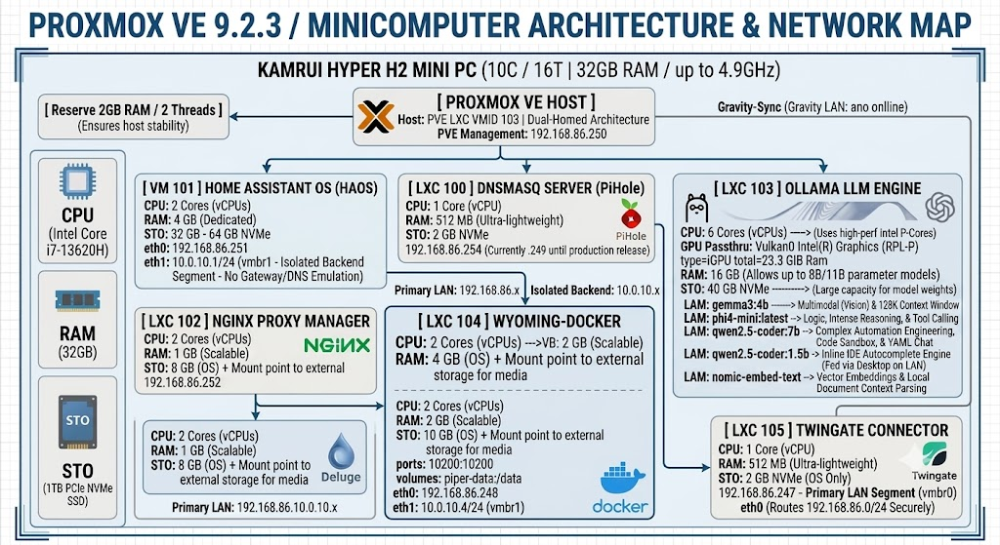
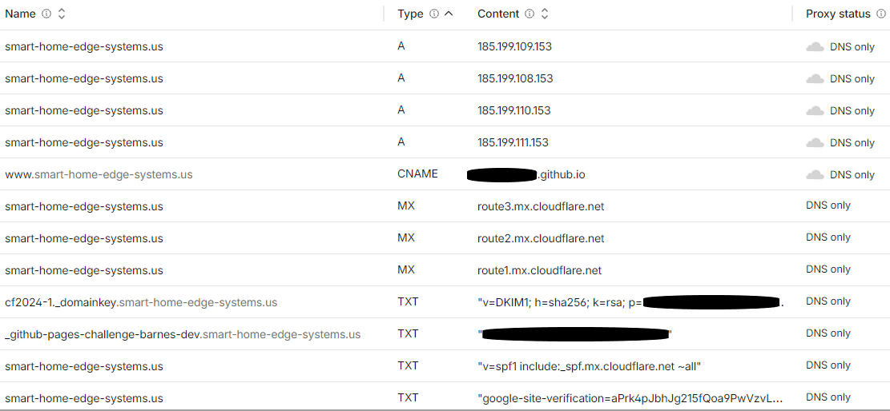

Basic Home Lab Configuration
Recommended Design Architecture
Basic Home Lab Configuration
A Home Lab self-contained in an inexpensive single mini-computer.

Figure 5: Proxmox VE 9.2.3 / Minicomputer Architecture & Network Diagram
Note: If you want to use this information in an AI window – select this section into your chat window to reference the entire configuration. This can be helpful if you want to ask any AI questions regarding your Home Lab configuration. Just tell your AI client "gemini" to load this config your reference in your conversation. It might be helpful to tell your AI conversation:
"Please start a clean conversation, flush all buffers and caches and then load this config for reference."
"Please start a clean conversation, flush all buffers and
caches and then load this config Code 2: Barnes Home Lab
Configuration |
|---|
Setting up a Domain Name
Reserve your spot now if you think you want to present an image to the external world.
Names are unique to the individual person or company. Cost can influence your Domain Name. I have found that a .us domain costs around $7 US dollars per year. That is probably the cheapest you can find. I have a reference paper that you can read in helping you decide what extension you want. I also have found the cheapest overall solution is to skip the middleman (they can introduce unknown costs and make the creation and decision more complicated). Read my paper called Choosing a Domain Name. Here are the steps, when you are finally ready to register your Domain Name.
Create an account on GitHub if you don't already have one.
Create an account on Cloudfare.com
Point the login details to use your GitHub account for login for authentication.
Step 1: Register Your New Domain
Cloudflare operates as an official domain registrar, selling domain names at wholesale cost without added markups.
Log in to your Cloudflare Dashboard.
On the left sidebar of your account home page, click Domain Registration > Register Domains.
Type the domain name you want in the search bar and press Enter.
Check the availability list. If your domain name is available it will tell you or recommend alternatives.
Click Add to cart next to your preferred extension (e.g., .us, .com, .org, .net).
Click Purchase Now.
Select your registration term length (e.g., 1 year) and fill out your Contact Information (required by ICANN for domain ownership logs). Cloudflare provides free WHOIS privacy, so your personal details will stay hidden from the public.
Enter your payment details and click Finalize Checkout.
Step 2: Access Your New DNS Dashboard
Because you bought the domain directly through Cloudflare, the nameservers are already configured automatically. You do not need to change any registrar settings to start using it. You will need to point it to your GitHub account.
Go back to your main Cloudflare Dashboard home page.
Click on your newly purchased domain name from your website list.
In the left sidebar, navigate to DNS > Records.
From the active DNS management pane, click Add Record to point your new domain to your web host, GitHub Pages, or an email provider using the exact setup steps described previously. We will do this step later in this document so don’t worry now.
Setting up a Public Repository on Github
To share files and host a web page on GitHub, you need to create a repository, upload your files, and activate GitHub Pages.
Follow this step-by-step process to get everything up and running.
Step 1: Create a Public Repository
GitHub Pages requires a public repository to host web pages for free.
Log in to your GitHub account.
Click the + (plus) icon in the top-right corner and select New repository.
Configure your repository settings:
Repository name: Type a name (e.g., your-DomainName).
I would leave off the . extension to keep things simple.
Public/Private: Select Public.
Initialize this repository with: Check the box for Add a README file.
Click Create repository.
Create 2 additional Repositories at this time.
site-documentation
This Repository will be to hold your work area for source documents that are being maintained for this Web Site.
Click the + (plus) icon in the top-right corner and select New repository.
Configure your repository settings:
Repository name: Type a name (e.g., site-documentation).
Public/Private: Select Private.
Initialize this repository with: Check the box for Add a README file.
home-lab-project
This Repository will be to hold your work area for source documents that are being maintained for this Web Site.
Click the + (plus) icon in the top-right corner and select New repository.
Configure your repository settings:
Repository name: Type a name (e.g., home-lab-project).
Public/Private: Select Private.
Initialize this repository with: Check the box for Add a README file.
Click Create repository.
Step 2: Upload Your Files
Your main web page must be named exactly index.html (all lowercase, and no spaces) for GitHub to recognize it as the homepage.
Since you don’t have any files yet just skip this step for now: Continue to Step 3
Inside your new repository
click the Add file dropdown button and choose Upload files.
Drag and drop your website files into the box. Ensure your main page is named index.html. You can also drop any other files (like PDFs, images, or ZIPs) you want to share.
Scroll down to Commit changes
add a short note describing your upload and click Commit changes.
Step 3: Turn on GitHub Pages
Now, tell GitHub to turn those uploaded files into a live website.
Click the Settings tab at the top of your repository.
In the left-hand sidebar menu, scroll down to the Code and automation section and click Pages.
Under Build and deployment > Source, keep it set to Deploy from a branch.
Under Branch, click the dropdown that says None, change it to main (or master), leave the folder as / (root), and click Save.
Wait about 1 to 2 minutes. Refresh the page, and a live link will appear at the top of the Pages section (e.g., https://github.io).
Step 4: Install Github Desltop
Its time to install Github Desltop and sync it to your Git Repository
Step 1: Install and Authenticate
Download the Installer: Go to desktop.github.com and download the version for your operating system (macOS or Windows).
Run the Setup: Open the downloaded file and follow the standard installation prompts.
Sign In: Once it opens, you will be prompted to sign into your account. Click Sign in to GitHub.com
Authorize: This will open your web browser. Confirm your credentials and click Authorize desktop. Your browser will then ask for permission to redirect you back to the application.
Step 2: Connect Your Repository
Depending on whether your repository already exists on GitHub or only exists as a folder on your computer, choose one of the methods below. We will be using the cloning method (Option A) since we do not have any web pages yet. Option B is here for future use (if needed)
Option A: If your repository is already on GitHub (Cloning). Not on your local machine.
This automated bundle contains the baseline configurations, code layouts, and operational manifests tracked for this module.
👁️ Internal Asset Preview
All embedded diagrams, schematics, and configurations are packaged below. Click the button to download the full-resolution archive block.
This is the most common path if you created the repo on the website first. You should pick a local path to hold all of your Website stuff. Maybe use something like your Site Domain under the Documents folder. Maybe C:\Users\yourusername\Documents\repositories. It is important to not use any spaces or special characters here since this is a path that will be referenced going forward.
In GitHub Desktop, go to the top menu and select File > Clone Repository.
Click the GitHub.com tab. You will see a list of all your online repositories.
Select your 1st repository from the list.
Choose the Local Path (the folder on your computer where you want the project files to live C:\Users\yourusername\Documents\repositories).
Click Clone.
Do this for the other 2 repositories created above.
Option B: If the folder is allready on your computer (Adding & Publishing)
This automated bundle contains the baseline configurations, code layouts, and operational manifests tracked for this module.
👁️ Internal Asset Preview
All embedded diagrams, schematics, and configurations are packaged below. Click the button to download the full-resolution archive block.
Use this if you have a local project folder that you want to upload to GitHub for the first time.
Go to File > Add Local Repository.
Browse and select your project's folder, then click Add Repository.
If it isn't a Git repository yet, the app will ask if you want to initialize it. Click Create a repository.
Once added, look at the top bar and click Publish repository to push it to your online GitHub account.
Step 3: Syncing Your Changes Going Forward
To keep your local computer and your online GitHub repository perfectly in sync, you will follow a simple 3-step loop whenever you do work:
[ Your Code Changes ] ──> [ Commit (Save Locally) ] ──> [ Push (Sync to GitHub) ]
Make Changes: Edit, add, or delete files in your project folder using your favorite code editor. GitHub Desktop will automatically track these changes in the left sidebar under the Changes tab.
Commit Your Changes: * At the bottom of the left sidebar, write a short summary of what you changed (e.g., "Updated home page text"). This is Required by git for tracking purposes
- Click the blue Commit to main (or master) button. This saves a snapshot of your work locally on your computer.
Push to GitHub: Look at the top menu bar. Click Push origin. This uploads your local commits to the cloud on GitHub.com.
💡 Pro-Tip: Before you start working next time, always click the Fetch origin (or Pull origin) button at the top. This downloads any changes made to the GitHub repository (like updates made from another computer or by a teammate) so your local files stay up to date. If you ar ethe only user and are positive that no other changes have been made offline then go ahead and skip this step.
Share Your Files and Site
To share the live website: Give people the URL generated in Step 3.
To share direct file downloads: Append the
exact file name to your website URL. For example, if you
uploaded a file named brochure.pdf, your shareable download link
is:
https://github.io
Pointing Cloudfare to Git Hub
To point a custom domain managed by Cloudflare to a GitHub Pages web page, you need to configure specific DNS records in Cloudflare and input your domain inside your GitHub repository settings.
Follow this complete step-by-step walkthrough to link your domain.
Step 1: Configure DNS Records in Cloudflare
First, you need to map your root domain (e.g., example.com) and your subdomain (e.g., www.example.com) to GitHub's infrastructure. These entries are summarized in a Figure below.
Log in to your Cloudflare Dashboard and select your domain name.
In the left-hand sidebar, navigate to DNS > Records.
Delete any existing A or CNAME records that are currently pointing your root (@) or www subdomains to another host.
Add four separate A records for your root domain using GitHub’s official IP addresses:
Click Add Record, choose Type A, set the Name to @, Proxy status set to DNS Only (grey cloud), and input the IPv4 address 185.199.108.153.
Repeat this process to add the remaining three IP addresses:
185.199.109.153
185.199.110.153
185.199.111.153
Add a CNAME record to handle traffic arriving via www:
- Click Add Record, choose Type CNAME, set the Name to www, and set the Target to your default GitHub Pages URL (e.g., yourusername.github.io).
- Add MX Records (Mail Exchange
You must delete any existing MX records from previous email hosts and add three separate Cloudflare MX records:
Type Mail Server Priority
MX @ route3.mx.cloudflare.net 45
MX @ Route2.mx.cloudflare.net 19
MX @ route1.mx.cloudflare.net 2
- Add SPF Record (Sender Policy Framework)
This TXT record authorizes Cloudflare to safely forward your emails without major email providers (like Gmail) flagging them as spam.
Type: TXT
**Name: @**
Value: "v=spf1 include:_spf.mx.cloudflare.net ~all"
Note: You are only allowed to have one SPF record on your root domain. If you already have an existing SPF record (for example, from Google Workspace or Microsoft 365), you must merge them together by inserting
include:_spf.mx.cloudflare.net right before the ~all or -all tag.
- Find the Value in Your Settings
Log in to the Cloudflare Dashboard and select your domain name.
In the left-hand sidebar, click Compute > Email Service > Email Routing.
Click on the Settings tab at the top of the page.
Scroll down to the DNS records section.
Look for the row where the record name begins with cf2024-1._domainkey.
Click on that row to expand it, and copy the full value string (the long text code starting with v=DKIM1; p=).
- Publish the Record to Your DNS
If Cloudflare doesn't add it automatically, or if you prefer to publish it manually:
In the left sidebar of your dashboard, click DNS > Records.
Click the Add record button.
Set the Type dropdown to TXT.
In the Name field, type exactly: cf2024-1._domainkey.
In the Content (or Value) field, paste the long text string you just copied from your Email Routing settings.
Leave the TTL on Auto, make sure Proxy Status is set to DNS Only (grey cloud), and click Save.
- Important Proxy Status Rule: Ensure the Proxy status toggle for all five newly created records is set to DNS Only (grey cloud) during the initial setup. This allows GitHub to verify the domain ownership and successfully issue an SSL certificate. You should change this to Proxied (orange cloud) later to enforce Cloudflare's security protections.

Figure 6: Cloudflare DNS Configuration
Step 2: Configure Your Custom Domain in GitHub
Now, inform GitHub that your repository should accept traffic originating from your custom domain.
Log in to GitHub and open the repository hosting your web page.
Click on the Settings tab located at the top of your repository navigation bar.
Scroll down the left sidebar menu and click on Pages.
Under the Custom domain section, type your root domain (e.g., example.com) into the text box and click Save.
GitHub will instantly create a file named CNAME in the root of your main repository branch.
Wait a few minutes (1-15) for the DNS check on the GitHub page to clear and the Enforce HTTPS box to become available.
The "Enforce HTTPS" checkbox on GitHub is grayed out for one specific reason: GitHub hasn't finished provisioning your SSL/TLS security certificate yet.
When you change your DNS settings (like fixing that CNAME record), GitHub has to talk to Let's Encrypt to issue a secure certificate for your custom domain. Until that process completes, it won't let you check that box.
- Once it successfully clears, check the box labeled Enforce HTTPS to secure your live site.
Configuring email for your new Domain
There are ways to use email relays to send and forward your emails so that your current inboxes can deal with them. Microsoft Outlook will not let you use these Relays since Microsoft treats these as untrusted. The core issue you will experience is a classic limitation of using email forwarding with a custom domain: when an email is forwarded via Cloudflare, Microsoft Outlook receives it with the original sender's address in the From field, but Outlook's default send/reply behavior forces you to send from your local mailbox identity rather than automatically routing replies back through Brevo's SMTP server under your custom domain.
Setting up email routing in Cloudfare
Cloudflare Email Routing allows you to set up multiple custom email addresses (aliases) on the same domain at no additional cost. I am choosing to use Cloudfare initially as my email router since the better solution Purelymail costs. At some point in the future I will upgrade to Purelymail. If you want to continue with Purelymail now please skip this step.
How Email Addressing Works in Cloudflare
You can manage multiple addresses using two main approaches inside the Cloudflare Dashboard (Email > Email Routing > Routes):
1. Individual Custom Addresses (Explicit Rules)
You can create distinct addresses for specific purposes and route them to the same or different personal inboxes:
sales@yourdomain.com → yourname@gmail.com
billing@yourdomain.com → yourname@gmail.com
personal@yourdomain.com → anotherinbox@outlook.com
2. Catch-All Address (Wildcard)
You can enable a single Catch-All rule (*@yourdomain.com). This automatically accepts and forwards emails sent to any prefix on your domain (e.g., amazon@yourdomain.com, netflix@yourdomain.com, random123@yourdomain.com) without creating explicit routing rules for each one.
Step-by-Step: Adding a New Address Rule
Log into your Cloudflare Dashboard and select your domain.
New Dashboard Navigation (Compute Section)
In the left sidebar, look for Compute:
Click Compute in the left menu.
Select Email Service $\rightarrow$ Email Routing.
Select smart-home-edge-systems.us from the domain dropdown list if prompted.
Select the Routes tab.
Under Custom addresses, click Create Routing Rule.
Enter your desired prefix (e.g., info) and select the verified Destination address where incoming emails should be delivered.
Click Save.
Key Limits to Keep in Mind
Custom Routing Rules: Free Cloudflare accounts allow up to 200 explicit custom address rules per domain.
Destination Inboxes: You must verify ownership of any target inbox (e.g., your Gmail or Outlook address) before Cloudflare will forward emails to it.
I created routes for sponsorships, vendors, media, engineering, and info.
If and when I decide to Migrate to Purelymail I will keep these addresses. You can now jump to Managing email storage Restrictions and return to Purelymail when you are ready.
Setting up Purelymail
Once your emails start flowing freely you will find it is getting cumbersome to make sure you enter the From: address in every email you reply or send to. There is a better, more reliable way to fix this, but it costs. $1o annually is not a great cost but it provides a lot of features to make day-to-day processing much easier. This section will explain how you can use purelymail.
Purelymail operates on a flat $10/year plan for the entire account.
Key Features & Capabilities
Unlimited Domains & Aliases:
You can add as many custom domains as you want under one account at no extra charge.
You can create unlimited standard mailboxes, catch-all addresses, or routing aliases.
Native IMAP/SMTP & Webmail:
Incoming (IMAP): imap.purelymail.com (Port 993 / SSL)
Outgoing (SMTP): smtp.purelymail.com (Port 465 / SSL or Port 587 / STARTTLS)
It includes a clean Webmail interface (Roundcube/Webmail) along with standard CalDAV/CardDAV support for syncing calendars and contacts.
High Deliverability Standards:
Out-of-the-box support for DKIM, SPF, and DMARC authentication.
Outbound emails are sent through reputable IPs, avoiding the spam-folder issues common with free relays or home-hosted servers.
Simple Pricing Model ($10/year):
- There are no artificial caps on users or storage under normal fair-use usage. (If you use massive amounts of bandwidth or storage, they offer an advanced usage-based metered tier, but typical email users stay on the $10/year flat tier).
How It Solves Your Outlook Problem
Once you point your Cloudflare DNS to Purelymail, your custom domain becomes a true, native email account.
We will explain the following in more detail in the next section.
Inside Desktop Outlook or Mobile Outlook: You add a new account, type in your you@yourdomain.com address, and enter your Purelymail password.
Sending & Replying: Outlook connects directly to Purelymail's IMAP and SMTP servers. Hitting Reply sends the email directly through Purelymail using your custom domain. You no longer need Cloudflare forwarding, Brevo SMTP relays, or manual address copying.
How Setup Works in Cloudflare
Sign up at Purelymail and add your custom domain.
Update DNS in Cloudflare: Delete your current Cloudflare Email Routing records and add Purelymail's provided DNS entries:
MX Record: Points incoming mail directly to mailserver.purelymail.com.
TXT Records (SPF & DKIM): Authorizes Purelymail to send on behalf of your domain.
Create Your User: Create a mailbox (e.g., me@yourdomain.com) in the Purelymail dashboard.
Log into Outlook: Add the account to Outlook using standard credentials.
Connecting Purelymail, Cloudflare, and New Microsoft Outlook establishes a direct, bi-directional email flow on your custom domain, resolving prior forwarder issues.
Step 1: Add Domain & Create Mailbox in Purelymail
Log into the Purelymail Account Admin Portal (not the webmail client).
Go to Domains in the top menu and click Add New Domain.
Type your custom domain name (e.g., yourdomain.com).
Purelymail will generate a set of DNS records and a unique string labeled purelymail_ownership_proof. Keep this tab open.
Open a new tab, navigate to Users > Add New User, and create your primary mailbox (e.g., you@yourdomain.com) and password.
Step 2: Configure DNS Records in Cloudflare
Log into your Cloudflare Dashboard and select your domain.
Click on DNS > Records in the sidebar.
Delete old email records: Remove any existing MX or TXT (SPF) records pointing to Cloudflare Email Routing, Brevo, or previous hosts to prevent routing conflicts.
Add the following records precisely:
Type Name / Host Target / Content / Value Priority Proxy
Status |
|---|
CRITICAL CLOUDFLARE RULE: All CNAME records for email (DKIM and DMARC) MUST be set to DNS Only (gray cloud). If Cloudflare's orange cloud proxy is enabled on DKIM CNAMEs, DKIM signatures will fail and your email will land in spam folders.
- Go back to your Purelymail tab and click Check DNS Records / Verify Domain. (Verification usually takes under 5 minutes).
Step 3: Connect Purelymail to New Microsoft Outlook
Now that DNS is active and routing directly to Purelymail, configure New Outlook (Windows/Web/Mac):
Open New Outlook and click the Gear Icon (Settings) in the top right corner.
Go to Accounts > Email accounts and click Add Account.
Type your full custom domain email (e.g., you@yourdomain.com) and click Continue.
New Outlook will attempt auto-detection. If prompted to choose a provider, select IMAP.
Click Show More or Advanced Settings and enter the following settings:
IMAP (Incoming Mail Server):
Server: imap.purelymail.com
Port: 993
Secure Connection: SSL / TLS
SMTP (Outgoing Mail Server):
Server: smtp.purelymail.com
Port: 465 (or 587 if 465 fails)
Secure Connection: SSL / TLS (use STARTTLS if selecting port 587)
IMAP / SMTP Username: Your full email address (you@yourdomain.com)
Password: Your Purelymail user password (or an App Password if you enabled 2FA in Purelymail).
- Click Continue / Save. Outlook will send a test payload and sync your inbox.
How Sending & Replying Will Work
No Header Hacks: Hitting Reply in Outlook sends mail directly through Purelymail's SMTP server.
Native Delivery: Replies arrive directly from you@yourdomain.com without proxy wrappers or reverse alias tracking.
Full Folder Sync: Sent items, drafts, and custom subfolders will sync across all devices via standard IMAP.
Email Aliases in Purelymail
Setting up aliases and catch-all routing in Purelymail is handled through Account Routing Rules in the Purelymail Admin Portal (not the webmail client).
Part 1: Setting Up Custom Aliases
An alias redirects incoming mail sent to a specific address (e.g., support@yourdomain.com) to an existing primary inbox (e.g., you@yourdomain.com).
Step-by-Step Instructions:
Log into the Purelymail Account Admin Portal.
Click on Routing in the top navigation menu.
Click Add Routing Rule (or Add Rule).
Configure the rule fields:
Domain: Select your custom domain.
Match Type: Select Specific email address.
Address Prefix: Type the alias name (e.g., support or billing).
Target / Destination: Type your primary email address (e.g., you@yourdomain.com).
Click Save.
Part 2: Setting Up a Catch-All Address
A catch-all rule captures any email sent to non-existent addresses at your domain (e.g., anything@yourdomain.com) and routes it to a designated inbox so no messages are lost.
Step-by-Step Instructions:
In the Purelymail Admin Portal, go to Routing.
Click Add Routing Rule.
Configure the rule fields:
Domain: Select your custom domain.
Match Type: Select Any address (Catch-all).
Target / Destination: Enter the user mailbox where all unmapped incoming mail should land (e.g., you@yourdomain.com).
Click Save.
Rule Precedence: Purelymail evaluates specific rules first. If you have a specific alias for support@yourdomain.com, it takes priority. Anything else without an explicit rule or user account will fall through to your catch-all address.
Part 3: Sending/Replying as Your Alias in Outlook
Creating a routing rule handles incoming mail. To send or reply outgoing mail using an alias inside Microsoft Outlook:
By default, Purelymail permits users to send from any address on verified domains. (You can verify this under Settings > Sending Restrictions in the Purelymail portal).
In New Outlook, open a new message or reply window.
Click the From dropdown menu at the top of the composer.
Select Other Email Address... and type your alias (e.g., support@yourdomain.com).
Outlook will send the message through Purelymail's SMTP server using the alias address as the From header.
Managing email storage Restrictions
To keep your mailbox under a 5GB storage limit for Purelymail, without losing messages, you need to offload email data from Microsoft’s servers to a local, off-server file or another storage location. Of course, if you are using cloudfare routing there is no limit since no emails are stored on their servers. It is good to set up practices from the beginning to keep things organized and provide initial analytics and statisticts.
Using the default "Archive" button in Outlook or Outlook on the Web will not free up your 5GB storage—it simply shifts messages to an "Archive" folder on the same server, continuing to count against your cloud quota.
Considerations
New Outlook for Windows / Outlook Web: "New Outlook" and the web app do not support local .pst file storage. If you use the web app or New Outlook, you must export emails via Settings > General > Privacy and data > Export mailbox (which downloads a copy), and then manually delete the emails from your inbox to free up space.
Backups: Local .pst files exist only on your computer's hard drive. Ensure your archive PST file is included in your routine computer backup routine (e.g., cloud backup or external drive) to prevent data loss if your drive fails.
Because New Outlook is essentially a web wrapper (built on webmail architecture) rather than a desktop app, Microsoft stripped out legacy COM add-ins, local VBA macro automation, and local "run a program" rule triggers. Native Outlook rules can move emails to internal subfolders, but they cannot save files to a Windows File Explorer directory automatically.
Power Automate Desktop (Free Built-In Windows App)
If you want 100% automated saving to local disk, use Power Automate Desktop (pre-installed on Windows 11 / downloadable on Windows 10):
Create a flow that connects to your Outlook account using the Outlook/Exchange Connector.
Set the trigger to run when an email is marked as Read or moved to a specific "Archive" folder.
Add a step to retrieve email properties (Date, Sender, Subject, Body, Attachments) and save them directly to a local folder as text, HTML, or .eml files.
Structuring Your Disk Folder for Easy Indexing
Whether you automate this via Power Automate or drag-and-drop, standardizing your file naming and directory structure is crucial for Windows Search, Everything (Voidtools), or desktop indexing tools to parse your archives easily.
Recommended Folder Hierarchy
Organize by year and topic or sender rather than deep nesting:
Plaintext |
|---|
Standardized Naming Convention
Name files using ISO 8601 dates (YYYY-MM-DD) at the beginning so File Explorer sorts them chronologically by default:
Plaintext
YYYY-MM-DD_[Sender]_[Sanitized_Subject].eml
- Example: 2026-08-31_AcmeCorp_Monthly_Statement_Invoice.eml
Tips for File Explorer Indexing:
Use .eml format: New Outlook natively exports as .eml. .eml is plain-text based, making its body text and headers natively indexable by Windows Search and third-party tools.
Sanitize Filenames: Ensure automated scripts strip illegal Windows filename characters (\ / : * ? " < > |).
Power Automation
Power Automate can build the disk directory, sort the files, and delete the original emails from the cloud server automatically.
When configured correctly, Power Automate moves through three steps seamlessly:
How the Automated Sequence Works
Creates Dynamic Folder Paths on Disk
Power Automate extracts the email metadata (such as Received Time and Sender).
It creates local folders on the fly using standard date formats (e.g., C:\Email_Archive\2026\Invoices\).
Exports File with Clean Naming
- It formats the file string using an ISO standard (e.g., YYYY-MM-DD_Sender_Subject.eml) and writes the message and attachments to the newly generated folder path.
Deletes the Email from the Server (Frees Up 5GB)
After confirming the file is saved to disk, the flow passes the unique Message ID into the Delete email (V2) step.
This permanently removes the email from the Outlook cloud mailbox, keeping storage well under the 5GB cap.
Step-by-Step Power Automate Flow Blueprint
To build this logic, set up a Cloud Flow (or Power Automate Desktop flow) with the following sequence:
[ Trigger: When a new email arrives / When an email is moved
to a folder ] |
|---|
Important Safeguards
Test with a Move Action First: Before adding the Delete Email step, test the flow by using Move Email (to an "Archive" or "Trash" subfolder in Outlook). Verify that the disk files export cleanly before allowing the flow to auto-delete messages off the server.
Handle File Name Sanitation: Subjects often contain special characters like :, ?, or /. Use replace() expressions in Power Automate to strip these out so File Explorer doesn't throw path errors.
Backup Destination: If exporting to a local hard drive via Power Automate Desktop, ensure that local directory is mirrored to cloud storage (like OneDrive or Google Drive) so drive failures don't cause data loss.
Power Automate
To implement this flow on a Windows machine, you need to address a structural requirement: Power Automate Cloud Flows (which handle Outlook triggers) cannot write to a local Windows hard drive directly.
To connect the Cloud trigger to your local C:\ drive, you must install the On-Premises Data Gateway on Windows.
Here is the step-by-step setup to build this workflow safely without failing on dynamic folder paths or character restrictions.
Step 1: Install the Local File System Gateway
Download and install the On-Premises Data Gateway (Standard Mode) from Microsoft.
Launch the installer, sign in with your Microsoft 365 account, name the gateway (e.g., MyDesktopGateway), and complete registration.
Open Windows Command Prompt and run whoami to get your exact local Windows username string (e.g., DESKTOP-ABC\John or AzureAD\JohnDoe).
Step 2: Configure the File System Connection in Power Automate
Go to make.powerautomate.com and sign in.
Navigate to Connections > New connection.
Search for File System and fill in the details:
Root folder: C:\Email_Archive (Ensure you create this folder on your C drive first).
Authentication Type: Windows.
Username: The exact output from your whoami command.
Password: Your Windows login password.
Gateway: Select your registered gateway (MyDesktopGateway).
Step 3: Build the Cloud Flow
Go to Create > Automated cloud flow.
1. Trigger: When a new email arrives (V3)
- Select Office 365 Outlook -> When a new email arrives (V3) (or When an email is moved to a folder if using folder-based archival).
2. Action: Compose (Sanitize Dynamic Content)
Due to Windows file-naming restrictions, sender addresses contain < and >, and subject lines contain characters like :, /, or ?. You must sanitize them to prevent the file creation from failing.
Add a Compose action for the Folder Path:
Plaintext |
|---|
Add a second Compose action for the File Name:
Plaintext |
|---|
3. Action: Create file (File System Connector)
Folder Path: Select the Output of your first Compose action (Outputs).
File Name: Select the Output of your second Compose action (Outputs).
File Content:
To save as a standard .eml or readable archive format, pass triggerOutputs()?['body/body'] (HTML Body) or use an Export Email action if raw headers are required.
Note on Automatic Subfolder Creation: The File System - Create file action automatically generates any missing subdirectories (e.g., 2026\JohnDoe) dynamically when executing the command.
4. Action: Delete email (V2)
- Message ID: Select dynamic content Message Id (triggerOutputs()?['body/id']).
Step 4: Test Safely Before Deleting
Before enabling step 4, disable or remove the "Delete email (V2)" step temporarily.
Send a test email to your inbox.
Verify that the dynamic path C:\Email_Archive\2026\sender@example.com\ is generated correctly on your hard drive and that the .eml file is written.
Once the file creation runs cleanly, add the Delete email (V2) step back into the flow.
Email Statistics and Analytics
You can implement analytics across two distinct layers depending on what you want to measure: Infrastructure/Execution Analytics (tracking if the flow ran successfully) and Business Analytics (tracking what was inside the archived emails, such as email volume by domain, file sizes, or time trends).
Layer 2: Business & Archival Analytics (Custom Logging)
Log to a Centralized CSV / Excel File
Adding an Excel Online (Business) or CSV action inside Power Automate.
Append a row every time an email is archived with fields:
- Timestamp | SenderDomain | FilePath | FileSizeBytes | HasAttachments
Recommended Logging Fields Matrix
If you implement custom logging, use this structure to capture useful metrics:
| Field Name | Source Expression | Analytical Value |
|---|---|---|
| ExecutionDate | utcNow('yyyy-MM-dd HH:mm:ss') | Tracks daily/hourly processing volume spikes. |
| SenderAddress | triggerOutputs()?['body/from'] | Identifies top email senders. |
| SenderDomain | last(split(triggerOutputs()?['body/from'], '@')) | Aggregates volume by vendor or internal department. |
| SubjectLength | length(triggerOutputs()?['body/subject']) | Detects potential filename truncation risks. |
| Status | 'SUCCESS' | Helps count total items offloaded from the server. |
To log analytics every time an email is archived, you can insert an Excel Online (Business) step into your flow.
Step 1: Create and Format the Excel Tracking File
Before configuring Power Automate, create a master spreadsheet to record each run:
Open Excel Online (via OneDrive or SharePoint).
Create a new workbook named Email_Archive_Log.xlsx inside your OneDrive or SharePoint document library.
In Sheet 1, create a table header row in row 1:
| A | B | C | D | E |
|---|---|---|---|---|
| Timestamp | Sender | SenderDomain | Subject | FilePath |
Highlight the headers and at least one blank row beneath them (A1:E2).
Go to the Home tab and click Format as Table. Pick any style, ensure "My table has headers" is checked, and click OK.
Select the table, go to the Table Design tab on the top ribbon, and rename it to ArchiveLogTable.
Step 2: Add the Excel Logging Action to Your Flow
In your existing Power Automate Cloud Flow, insert the Excel logging step right after creating the local file and right before deleting the email if missing:
Click + New step (or the + icon) between Create File and Delete Email.
Search for Excel Online (Business) and select the action Add a row into a table.
Configure the file location fields:
Location: Select OneDrive for Business (or SharePoint Site).
Document Library: Select OneDrive (or your library name).
File: Browse and pick Email_Archive_Log.xlsx.
Table 1: Select ArchiveLogTable from the dropdown.
Step 3: Map Dynamic Content and Expressions
Once the table is loaded, Power Automate will automatically expand input fields for each column header in your Excel table:
• Timestamp: Select the Expression tab and enter: |
|---|
Step 4: Verify Executions
Save your updated flow and run a test email.
Verify that the file is created on your C:\ drive, the email is deleted from Outlook, and a new row appears in Email_Archive_Log.xlsx.
You can now point Power BI Desktop directly to Email_Archive_Log.xlsx to render charts of archived email volume over time, top email domains, or daily processing trends.
External Services & Platforms Referenced
Domain & DNS Management
Cloudflare Dashboard — https://dash.cloudflare.com/
Used for domain registration and DNS management
Email routing service
WHOIS privacy protection
Web Hosting & Version Control
GitHub — https://github.com/
Repository hosting and GitHub Pages (free static site hosting)
Domain: yourusername.github.io
GitHub Desktop — https://desktop.github.com/
- Desktop application for Git repository management
Email Services
Primary Email Solution
Purelymail — https://purelymail.com/
IMAP/SMTP email service ($10/year)
DKIM, SPF, DMARC support
Custom domain email hosting
IMAP Server: imap.purelymail.com (Port 993)
SMTP Server: smtp.purelymail.com (Port 465/587)
Alternative/Supplementary Services
Brevo — Email relay service (mentioned as alternative)
Cloudflare Email Routing — Free email forwarding
Productivity & Automation
Microsoft Power Automate — https://make.powerautomate.com/
Cloud workflow automation
Power Automate Desktop (Windows 11/10 built-in)
On-Premises Data Gateway for local file access
Microsoft Outlook (New Outlook for Windows/Web/Mac)
- Email client integration with IMAP/SMTP
Email Infrastructure Services
- Let's Encrypt — SSL/TLS certificate provider (referenced for HTTPS)
Technical Concepts & Documentation to Reference
Email Authentication & Security
SPF (Sender Policy Framework) — Email authorization protocol
- Format: v=spf1 include:_spf.purelymail.com ~all
DKIM (DomainKeys Identified Mail) — Email signing
- CNAME records: purelymail1._domainkey, purelymail2._domainkey, purelymail3._domainkey
DMARC (Domain-based Message Authentication) — Email policy enforcement
- CNAME record: _dmarc
DNS Record Types
A Records — IPv4 address mapping (GitHub: 185.199.108.153, 185.199.109.153, 185.199.110.153, 185.199.111.153)
CNAME Records — Canonical name aliasing
MX Records — Mail exchange routing
GitHub Pages & Deployment
GitHub Pages documentation (free hosting for static sites)
Custom domain configuration with DNS
Email Protocols
IMAP — Email retrieval (Port 993 for SSL/TLS)
SMTP — Email sending (Port 465 for SSL, Port 587 for STARTTLS)
Further Reading & Learning Resources
Cloudflare Documentation — Domain registration, DNS management, email routing
GitHub Pages Documentation — Custom domains, SSL/TLS with HTTPS
Purelymail Setup Guides — Email configuration, IMAP/SMTP setup, routing rules
Microsoft Power Automate Docs — Cloud flows, connectors, On-Premises Data Gateway
ICANN Domain Ownership — WHOIS privacy and domain registration requirements
RFC 7208 (SPF) — Technical specification for Sender Policy Framework
RFC 6376 (DKIM) — Technical specification for DomainKeys Identified Mail
RFC 7489 (DMARC) — Technical specification for Domain-based Message Authentication
Key Configuration URLs to Bookmark
| Service | URL | Purpose |
|---|---|---|
| Cloudflare | https://dash.cloudflare.com/ | Manage domains & DNS |
| GitHub | https://github.com/ | Repository & Pages hosting |
| Power Automate | https://make.powerautomate.com/ | Email automation workflows |
| GitHub Desktop | https://desktop.github.com/ | Local repository sync |